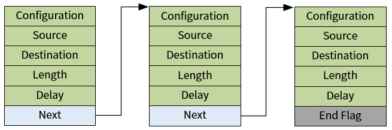

数据结构设计
15 Jan 2024
Read time: 2 minute(s)
本节介绍了 DMA 数据类型及其结构描述。
struct aic_dma_dev
属于 HAL 层接口，记录 DMA
控制器的配置信息：
struct aic_dma_dev {
struct aic_dma_task task[TASK_MAX_NUM];
s32 inited;
unsigned long base;
u32 burst_length; /* burst length capacity */
u32 addr_widths; /* address width support capacity */
struct aic_dma_chan dma_chan[AIC_DMA_CH_NUM];
struct aic_dma_task *freetask;
};struct aic_dma_chan
属于 HAL 层接口，记录了一个 DMA
物理通道对应的通道号、寄存器基地址等信息
struct aic_dma_chan {
u8 ch_nr; /* drq port number */
u8 used;
u8 irq_type; /* irq types */
bool cyclic; /* flag to mark if cyclic transfer one package */
bool memset;
unsigned long base;
struct dma_slave_config cfg;
volatile int lock;
dma_async_callback callback;
void *callback_param;
struct aic_dma_task * desc;
};struct aic_dma_task
DMA 控制器支持散列 (Scatter Gather) 的描述符参数形式，需要提前将参数分组打包到多个描述符中，一个 Buffer 对应一组散列参数。这些描述符会组成一个链表，然后将这个链表的第一个描述符的物理地址传给 DMA 控制器。描述符组成的链表结构如下图：

提示： End Flag 是 DMA
控制器硬件预先定义好的一个数值，值为 0xfffff800。
DMA 描述符的数据结构定义如下：
struct aic_dma_task {
u32 cfg; /* DMA transfer configuration */
u32 src; /* source address of one transfer package */
u32 dst; /* destination address of one transfer package */
u32 len; /* data length of one transfer package */
u32 delay; /* time delay for period transfer */
u32 p_next; /* next task node for DMA controller */
u32 mode; /* the negotiation mode */
/*
* virtual list for driver maintain package list,
* not used by DMA controller
*/
struct aic_dma_task *v_next;
};struct dma_slave_config
DAM 通道的配置信息，和 Linux DMA Engine
接口的定义保持一致。
struct dma_slave_config {
enum dma_transfer_direction direction;
unsigned long src_addr;
unsigned long dst_addr;
enum dma_slave_buswidth src_addr_width;
enum dma_slave_buswidth dst_addr_width;
uint32_t src_maxburst;
uint32_t dst_maxburst;
uint32_t slave_id;
};